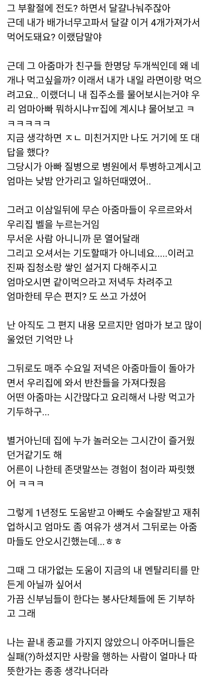

갑자기 동네 성당에서 찾아옴 ㄷㄷㄷ
댓글
교회에 기부하는 돈이 저렇게 쓰인다면 참 좋은일 일텐데
말이나 이론보다 삶과 인격으로 복음을 전하는 저 천주교 전도 방법을 '생활전도'라고 하는데,
이렇게도 부름
'그리스도의 향기'
"기도 할때가 아니네요."
볼때 마다 이 대사 무언가 멋있음;;;
행위가 아닌 본질에 집중하는 것
욕먹을짓도 많이 하지만 이웃에게 봉사하는 저 행동만으로도 종교단체는 의미가 있다
등으로 말해야지..
성령들이 들렀구만
개독과 천주교의 차이
난독임?
쓰읍...솔직히 개신교면 지금 어려울때 헌금내고 봉사해야 예수님이 알아주신다면서 수요 예배도 드리고 일요일도 예배 드리고 십일조에 온갖 헌금을 내셔야 일이 잘 풀릴거라 말할거 같긴해 ㅋㅋㅋ 음식 가져다주면서 아마 도와야 주겠지만 ㅋㅋㅋㅋ
내 친구중에 모태개신교 친구가 3~4명 되는데30년 가까이 지내면서 친구네 집에서 밥먹을때 힌번(만난지 초창기에) “개붕이도 혹시 교회다니니? 다녔으면 침 좋았을텐데” 한마디 하시고 그후론 포교 이런거 일절 없으시고 평생 여러군데 봉시하시면서 사시는 친구 부모님도 계시고 착한분들도 정말 많이봄.
개신교 중에도 저렇게 봉사하시는 분들 엄청 많아.. 기업화 및 세습화된 대형교회가 문제임
종교을 전파하진 않았지만
결국 자신들이 믿고 따르는 신의 가르침을 무교인에게도 퍼트렸으니
오히려 종교인을 개종시킨것보다 대단한게 아닐까
예수를 믿는것보다 중요한건
예수처럼 살아가는거구나
아주머니들은 성공한거지
내가 너희에게 새 계명을 준다. 서로 사랑하여라. 내가 너희를 사랑한 것처럼 너희도 서로 사랑하여라.
너희가 서로 사랑하면, 모든 사람이 그것을 보고 너희가 내 제자라는 것을 알게 될 것이다.(요한 13:34-35)
씁 너는 성당좀 다녀라
천주교인들의 멋진 마인드 "지금은 기도 할때가 아닌것 같습니다 " 먼저 행하고 댓가 없는 도움부터
네 이웃을 사랑하라.
그대로 실천 이게 종교지
성당이 전도한다는거 처음들어보는거같은데...? 성당맞음?
이런일 겪으면 나도 종교를 믿을거 같음
이런저런 말이 많지만 실제로 그들이 적극적으로 선을 행하는 것도 사실인 것 같음